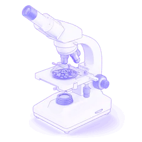
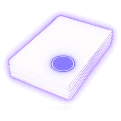
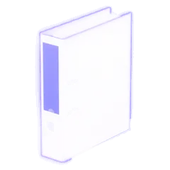

Анализ пищевых продуктов и готовых блюд
Отбираем пробы сырья, продукции и готовых блюд на вашем объекте и исследуем их на микробиологические и химические показатели безопасности ТР ТС 021/2011 и пищевую ценность. Протоколы — для программы производственного контроля на принципах ХАССП.
- Микробиология — от 690 ₽, химия — от 194 ₽ за показатель
- Пищевая ценность — от 980 ₽
- Рестораны, кулинарии, пищевые производства, школы и больницы
Что такое анализ пищевых продуктов
Анализ пищевых продуктов — лабораторное исследование сырья, полуфабрикатов, готовой продукции и блюд на соответствие показателям безопасности: микробиологическим, химическим, а при необходимости — на пищевую ценность. Нормативы безопасности установлены ТР ТС 021/2011, требования к указанию пищевой ценности — ТР ТС 022/2011. Предприятия общепита и пищевые производства проводят такие исследования в рамках производственного контроля на принципах ХАССП.
| Что исследуем | сырьё, полуфабрикаты, готовую продукцию и блюда — по программе производственного контроля |
|---|---|
| Показатели | микробиология: КМАФАнМ, БГКП, S. aureus, патогенные микроорганизмы, в том числе сальмонеллы, листерии, плесени и дрожжи; химические показатели безопасности; белки, жиры, углеводы и калорийность |
| Нормативы | ТР ТС 021/2011 — приложения 1 и 2 (микробиологические нормативы по группам продукции); ТР ТС 022/2011 — пищевая ценность для маркировки |
| Как часто | по программе производственного контроля: в общепите её порядок и периодичность, включая лабораторные исследования, устанавливает само предприятие (п. 4 СанПиН 2.3/2.4.4282-26) |
| Сколько стоит | микробиология — от 690 ₽, химия — от 194 ₽ за показатель, пищевая ценность — от 980 ₽ — соберите расчёт |
| Что вы получите | протокол по каждой пробе и вывод: соответствует ли продукция нормативам |
Обновлено 11.11.2026 · Автор: Марианна Семерина, санитарный врач
Цены на анализ пищевых продуктов и расчёт
Нажмите «+» и укажите число показателей или проб — сумма появится внизу экрана. Расчёт общий для всех страниц раздела: его можно отправить вместе с заявкой.
Пищевые продукты и готовые блюда3 позиции · от 194 ₽
| Услуга | Единица | Цена | Расчёт |
|---|---|---|---|
| Микробиологический анализ пищевых продуктов и готовых блюд | элемент | от 690 ₽ | |
| Химический анализ пищевых продуктов и готовых блюд | элемент | от 194 ₽ | |
| Анализ пищевой ценности | точка | от 980 ₽ |
Часто заказывают вместе3 позиции · от 300 ₽
| Услуга | Единица | Цена | Расчёт |
|---|---|---|---|
| Анализ смывов | точка | от 310 ₽ | |
| Микробиологический анализ воды | комплекс | от 2 350 ₽ | |
| Микробиологический анализ воздуха | комплекс | от 300 ₽ |
Цена «от» — за один показатель (в прайсе — «элемент») или одну пробу для пищевой ценности. Набор показателей зависит от группы продукции и программы производственного контроля; точную сумму называем до отбора проб.
Что показывает анализ продуктов питания
Набор показателей берут из ТР ТС 021/2011 для вашей группы продукции и из плана ХАССП. Основные группы:
| Показатель | Что означает | Где важен |
|---|---|---|
| КМАФАнМ — количество мезофильных аэробных и факультативно-анаэробных микроорганизмов | общая микробная обсеменённость продукта: как соблюдаются температура, сроки и гигиена | готовые блюда, кулинария, полуфабрикаты, молочная и мясная продукция |
| БГКП — бактерии группы кишечной палочки | санитарно-показательные бактерии: загрязнение после термообработки, через руки, инвентарь или сырьё | холодные закуски, салаты, десерты, продукция без повторной термообработки |
| S. aureus — золотистый стафилококк | попадание микроорганизмов с рук и кожи персонала | кремовые изделия, салаты, продукция ручной сборки |
| Патогенные микроорганизмы, в том числе сальмонеллы; листерии L. monocytogenes | прямой риск пищевого отравления; для многих групп продукции не допускаются в 25 г | мясо, птица, яйца, рыба, готовая к употреблению продукция |
| Плесени и дрожжи | порча при хранении, нарушение условий и сроков | хлеб и выпечка, кондитерские изделия, соки, молочная продукция |
| Химические показатели безопасности | содержание веществ, нормируемых ТР ТС 021/2011 для группы продукции | входной контроль сырья, новые поставщики, собственная продукция |
| Пищевая ценность: белки, жиры, углеводы, калорийность | данные для маркировки и технико-технологических карт | производители упакованной продукции, кулинарии, сети с собственным производством |
Микробиологические нормативы по группам продукции — в приложениях 1 и 2 к ТР ТС 021/2011. Какие показатели нужны именно вам, сверяем с планом ХАССП и программой производственного контроля.
Кому нужен анализ пищевой продукции
Готовые блюда
Исследования блюд и полуфабрикатов собственного производства по программе производственного контроля на принципах ХАССП. Порядок и периодичность исследований предприятие устанавливает само (п. 4 СанПиН 2.3/2.4.4282-26).
Продукция и сырьё
Готовая продукция на критических этапах по плану ХАССП, входной контроль сырья и продукция от новых поставщиков. Вместе с этим — смывы с оборудования и рук.
Собственное производство
Салаты, нарезка, выпечка и кулинария, которые готовят и фасуют в магазине, — по той же логике ХАССП, что и в общепите.
Пищеблок
Блюда пищеблока по программе производственного контроля. Суточную пробу пищеблок отбирает и хранит сам: от каждой партии, не менее 100 г блюда, не менее 48 часов при +2…+6 °C (п. 56 подп. 4 и п. 59 подп. 10 СанПиН 2.3/2.4.4282-26).
Пищевая ценность
Содержание белков, жиров и углеводов и энергетическая ценность для маркировки: на 100 г или 100 мл либо на порцию, в килоджоулях и килокалориях (ст. 4.9 ТР ТС 022/2011).
Единый стандарт
Одинаковый набор показателей и график отбора для всех точек сети — удобно сравнивать результаты и показывать аудитору.
Как мы отбираем пробы продукции
- План. До выезда согласуем, какие продукты и блюда берём, на какие показатели и сколько продукта нужно на пробу.
- Отбор. Специалист отбирает пробы в стерильную упаковку стерильным инструментом, не вскрывая лишнего и не нарушая технологию.
- Маркировка и акт. На каждую пробу — этикетка; в акт отбора заносим наименование, партию, дату изготовления, срок годности, место и время отбора.
- Доставка. Охлаждённую и замороженную продукцию везём в термоконтейнере с хладоэлементами, чтобы проба дошла до лаборатории без изменений.
- Исследование и протокол. Исследуем пробы в нашей лаборатории и сравниваем результат с нормативами ТР ТС 021/2011 для группы продукции.
Если продукция не соответствует
Несоответствие по микробиологии почти всегда указывает на конкретный этап: недостаточная термообработка, долгое остывание, хранение при неправильной температуре, перекрёстное загрязнение через доски, ножи или руки.
Протокол помогает найти этот этап. Мы подскажем, какие смывы и пробы добавить, чтобы подтвердить причину, а после исправления повторим исследование.
- Изолировать и не выпускать партию до выяснения причины
- Проверить температуру и время термообработки и охлаждения
- Проверить условия и сроки хранения сырья и полуфабрикатов
- Взять смывы с оборудования, инвентаря и рук
- Повторное исследование и запись в документах ХАССП
Как заказать анализ продуктов
- ЗаявкаПришлите программу производственного контроля или перечень продуктов и блюд. Согласуем показатели и стоимость.

ВыездПриезжаем в согласованное время — когда продукция готова и её можно взять в обычном виде, без подготовки «для проверки».
Отбор пробОтбираем пробы в стерильную упаковку, маркируем и составляем акт отбора.
ИсследованиеДоставляем пробы в нашу лабораторию с соблюдением температуры и исследуем на согласованные показатели.
ПротоколПередаём протокол по каждой пробе и разбор результата — для программы ППК и документов ХАССП.
Кто подготовил материал

- По вашей программе. Точки, показатели и кратность берём из плана-графика ППК, а не из общего списка.
- Понятный результат. К протоколам — короткий разбор: что в норме, что нет и что сделать.
- Вместе с санитарными работами. Если показатель не в норме, поможем исправить причину: дезинфекция, пест-контроль, очистка вентиляции — и повторим исследование.
Нормативная база (проверено 11.11.2026)
Документы о производственном контроле, дезинсекции и дератизации — в разделе «Нормативная база».
- ТР ТС 021/2011 «О безопасности пищевой продукции» — приложение 1 (микробиологические нормативы, в том числе патогенные микроорганизмы) и приложение 2 (нормативы по группам продукции) (Кодекс)
- ТР ТС 022/2011 «Пищевая продукция в части её маркировки» — ст. 4.9 (пищевая ценность) (КонсультантПлюс)
- СанПиН 2.3/2.4.4282-26 «Санитарно-эпидемиологические требования к организации общественного питания населения» (утв. 02.06.2026 № 18, действуют с 01.09.2026 взамен СанПиН 2.3/2.4.3590-20) — п. 4 (производственный контроль на принципах ХАССП, включая лабораторные исследования) и п. 13 (вода для производственных целей) (Гарант)
- СанПиН 2.3/2.4.4282-26 «Санитарно-эпидемиологические требования к организации общественного питания населения» — п. 56 подп. 4 и п. 59 подп. 10 (суточная проба) (Гарант)
- СП 1.1.1058-01 «Организация и проведение производственного контроля за соблюдением санитарных правил и выполнением санитарно-противоэпидемических (профилактических) мероприятий» — п. 2.5 (Гарант)
Связанные услуги и материалы
Вопросы об анализе пищевых продуктов
Микробиологический анализ — от 690 ₽ за показатель, химический — от 194 ₽, анализ пищевой ценности — от 980 ₽. Итог зависит от числа проб и набора показателей. Соберите расчёт или пришлите программу производственного контроля.
Обычно микробиологические: КМАФАнМ, бактерии группы кишечной палочки, золотистый стафилококк, патогенные микроорганизмы, в том числе сальмонеллы, а для отдельных блюд — листерии, плесени и дрожжи. Точный набор зависит от группы продукции по ТР ТС 021/2011 и плана ХАССП.
С периодичностью из программы производственного контроля. По п. 4 СанПиН 2.3/2.4.4282-26 предприятие общественного питания проводит производственный контроль на принципах ХАССП и само устанавливает порядок и периодичность, включая лабораторные исследования.
Количество мезофильных аэробных и факультативно-анаэробных микроорганизмов — показатель общей микробной обсеменённости продукта. Повышенное значение говорит о нарушении температуры, сроков хранения или гигиены на производстве.
В лаборатории определяют содержание белков, жиров и углеводов. Энергетическую ценность рассчитывают по коэффициентам ТР ТС 022/2011: белки и углеводы — 4 ккал/г, жиры — 9 ккал/г. На этикетке её указывают в килоджоулях и килокалориях на 100 г или 100 мл либо на порцию.
Не менее 48 часов при температуре от +2 до +6 °C; холодные закуски, первые блюда, гарниры и напитки отбирают не менее 100 г, порционные изделия — целиком. Это требование для пищеблоков детских и медицинских организаций (СанПиН 2.3/2.4.4282-26).
Не выпускать партию, найти этап, где произошло нарушение, — термообработка, охлаждение, хранение, перекрёстное загрязнение, — исправить и повторить исследование. Чтобы подтвердить причину, часто добавляют смывы с оборудования и рук.
Обычно да: программа производственного контроля пищевого объекта включает смывы, воду и продукцию. Вода для производственных целей, мытья посуды и оборудования в общепите должна отвечать требованиям к питьевой (п. 13 СанПиН 2.3/2.4.4282-26) — см. анализ воды.
Один подрядчик — все санитарные задачи
Пест-контроль, санитарная обработка, лабораторный контроль и документы к проверке Роспотребнадзора для организаций Москвы и области.
Осмотрим объект за один выезд и рассчитаем всё вместе — с общим графиком работ и комплектом документов.
Рассчитать комплексПроверим продукцию вашего объекта
Опишите объект и продукцию или пришлите программу производственного контроля — перезвоним, согласуем показатели и назовём стоимость.
- Микробиология — от 690 ₽ за показатель
- Отбор проб на вашем объекте
- Москва и Московская область